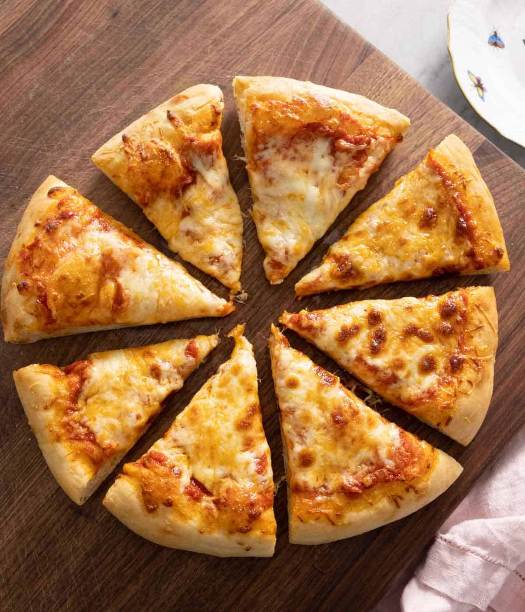

The original cheese pizza that is so popular today was the pizza of Naples, a worker's snack that sometimes had toppings and sometimes didn't. In 1889, the first cheese pizza was made by Neapolitan baker Raffaele Esposito. He created a pizza to celebrate the Italian flag - with the red being the sauce, the white being the cheese, and the green being the basil. He named it after the Queen of Italy, Margherita Teresa Giovanni, creating the margherita pizza. Today, the types of pizza are essentially limitless.
Here is the sourceWhat you need for this recipe:
The pizza should come out like this:
